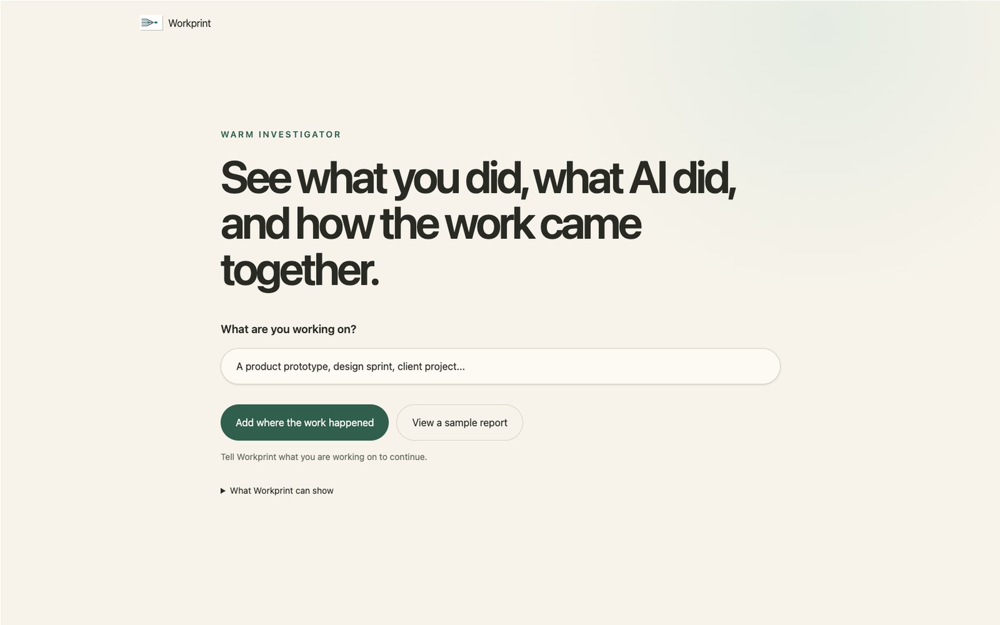
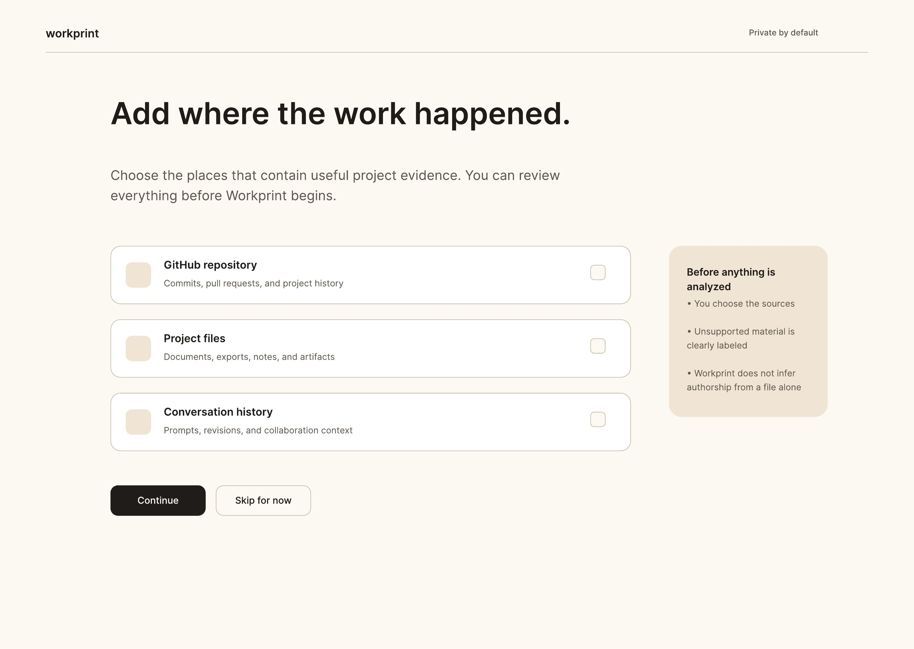
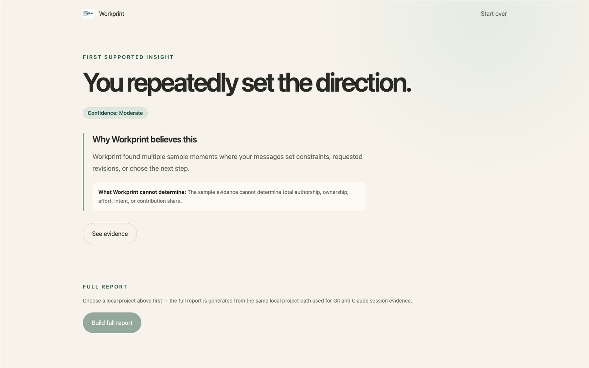
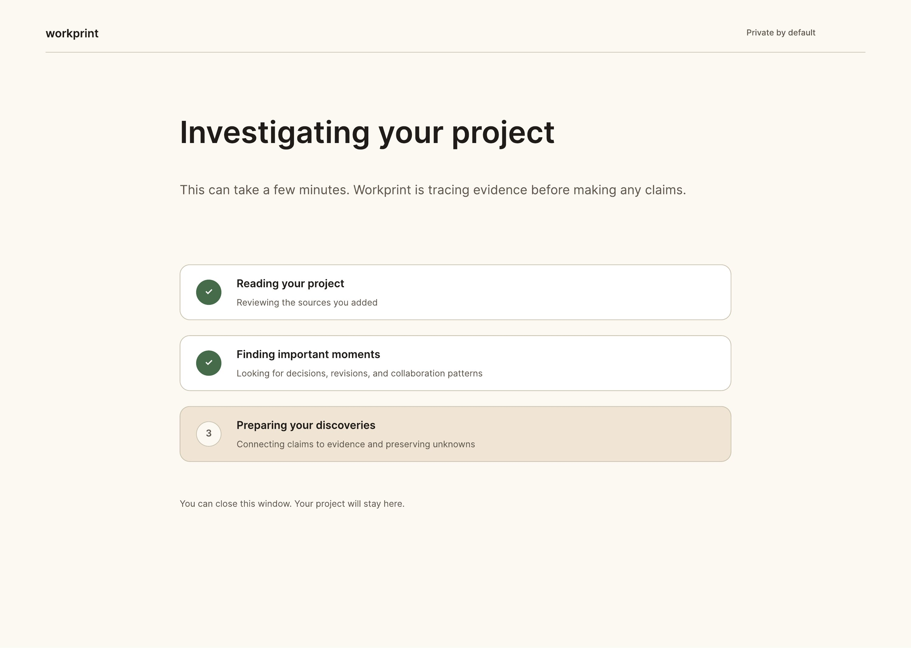
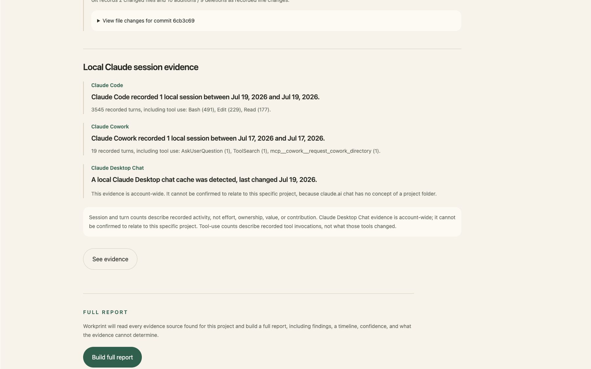
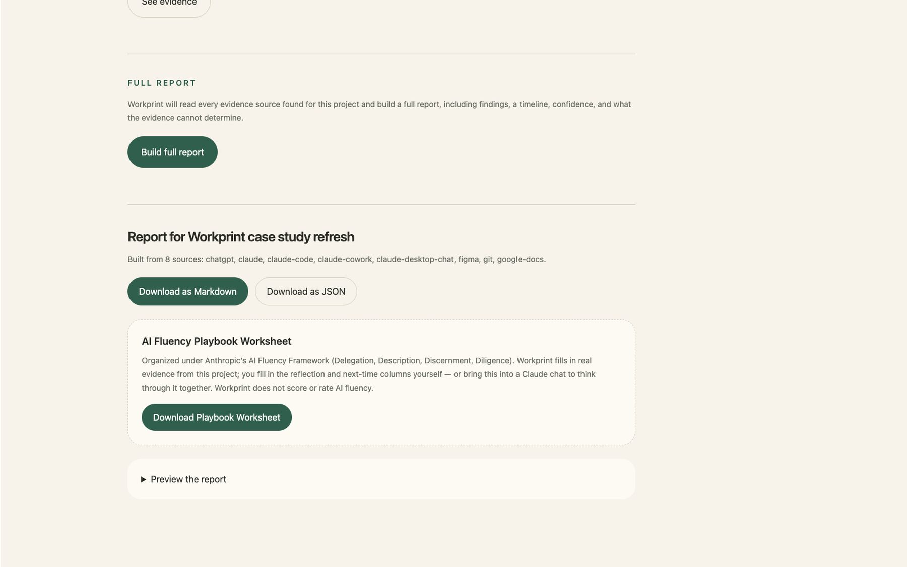

Workprint
Workprint
Case Study · Product Prototype
The history wasn't gone. It was just scattered.
Workprint rebuilds the story of a project from its scattered pieces: docs, messages, commits, so nothing gets lost between handoffs.
Workprint
Case Study · Product Prototype
Workprint rebuilds the story of a project from its scattered pieces: docs, messages, commits, so nothing gets lost between handoffs.

The Problem
When a project changes hands, most of what mattered, the decisions, the reasoning, the dead ends, lives in scattered docs, chat threads, and half-remembered conversations. Workprint's job is to pull that history back together into something a new owner can actually trust.
Role
Product strategy, experience architecture, and UX writing. I set the direction and structured the flow, then wrote every piece of copy in the product myself.
Visual Direction
I developed a register I call "Warm Investigator": precise enough to earn trust in a reconstruction tool, warm enough that reading your own project history back doesn't feel clinical.
Collaborators
Built with ChatGPT, Codex, Claude Code, GitHub, and Figma. Each handled a different part of the work, but the product decisions, what to build and why, stayed mine. I reviewed everything before it shipped.
Artifacts

Choosing sources

First discovery

Seeing the evidence behind it

AI Fluency evidence

Exporting the Playbook Worksheet
Outcome
Workprint's alpha is live: a real, downloadable desktop app, verified against real project data, open source under Apache 2.0. It's still buggy — but here's what actually exists today:
Alpha release
Downloadable now
Real desktop app
No browser, no setup
Open source
Apache 2.0 license